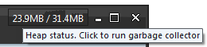

|
substancelaf.heapStatusTraceFile
since version 5.0
|
If specified, the title panes of frames will have menu item that enables heap status panel. If this flag
is specified, the initial state of the heap status panel is invisible. The visibility
status can be toggled via a menu entry in the main menu. If no value is specified,
the heap panel is enabled. If value is specified, it is taken to be the name of the logfile
for tracking the heap panel status. Each entry in the logfile has timestamp, used heap space
in KB and total heap space in KB. For example,
-Dsubstancelaf.heapStatusTraceFile=C:\temp\heap-status.log

|
|
substancelaf.traceFile
since version 2.0
|
Specifies that Substance
should run in trace mode, providing the location of the trace logfile. Every few seconds, Substance
will record allocation of large images and cache sizes to this file in order to pinpoint
the memory problems. For example,
-Dsubstancelaf.traceFile=C:\temp\substance.log
|